Análisis Super Mario Party Jamboree: El Mario Party más completo, ¿y el mejor de Switch? (Switch)
Con un aluvión de modos de juego, más de 110 minijuegos y propuestas para jugar en local, en solitario y online, en este guateque hay mucho que hacer.
Análisis de la versión de Switch.
Los tableros habituales de Mario Party; minijuegos, puzles y otros entretenimientos donde se utilizan los controles por movimiento; propuestas más extensas pensadas sobre todo para el online; y diferentes formas de organizar los más de 110 minijuegos para disfrutarlos con colegas, a través de internet, en solitario y compitiendo en tablas de clasificación. Super Mario Party Jamboree comienza con un repaso, bastante largo, por todas sus islas (¿casualidad que en unas semanas salga otro Mario donde se exploran islas, Mario & Luigi: Conexión Fraternal?). Un repaso tan abrumador como confiado: es un juego que sabe que rebosa contenido, que aquí hay algo para toda situación y tipo de jugador. Es indudable que hay cantidad, ¿pero qué tal la calidad?
El Mario Party tradicional, más completo y caótico
Comencemos por el corazón de esta verbena (Jamboree también se puede traducir por guateque; elegid la palabra que más os guste), los tableros, el Mario Party de toda la vida. Aquí hay siete tableros, ordenados mediante estrellas según su complejidad, cinco de ellos totalmente nuevos y otros dos que vuelven, renovados estética y jugablemente, de las dos primeras entregas de la serie. Es un conjunto robusto con diferentes propuestas: más simples y más enrevesados, más previsibles y más caóticos. Como siempre, el objetivo es terminar la partida con más estrellas que los otros tres jugadores (en local o en línea, también se puede jugar contra la CPU y que la máquina rellene los espacios de una partida multijugador incompleta), y como es habitual, obtenerlas es tanto una cuestión de estrategia y de habilidad en los minijuegos, como, sobre todo, de la suerte y de tu inclinación para chinchar a amigos que quizá puedan cabrearse un poquito cuando le robes sus estrellas.
Gameplay
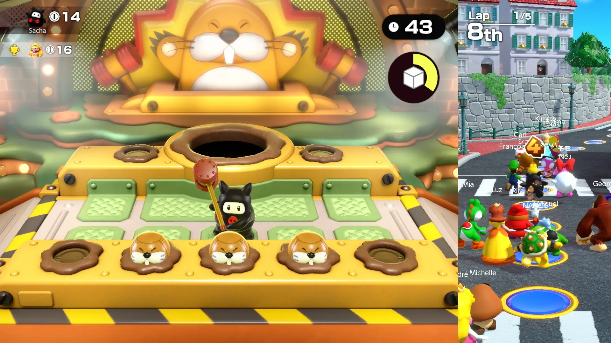
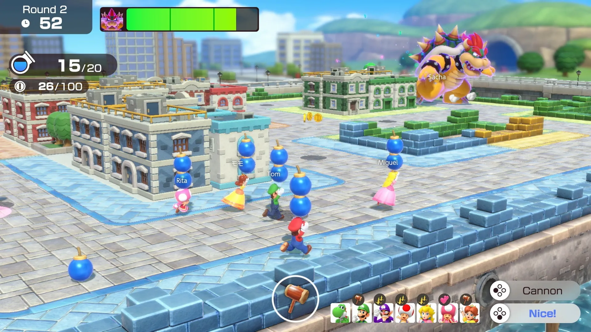
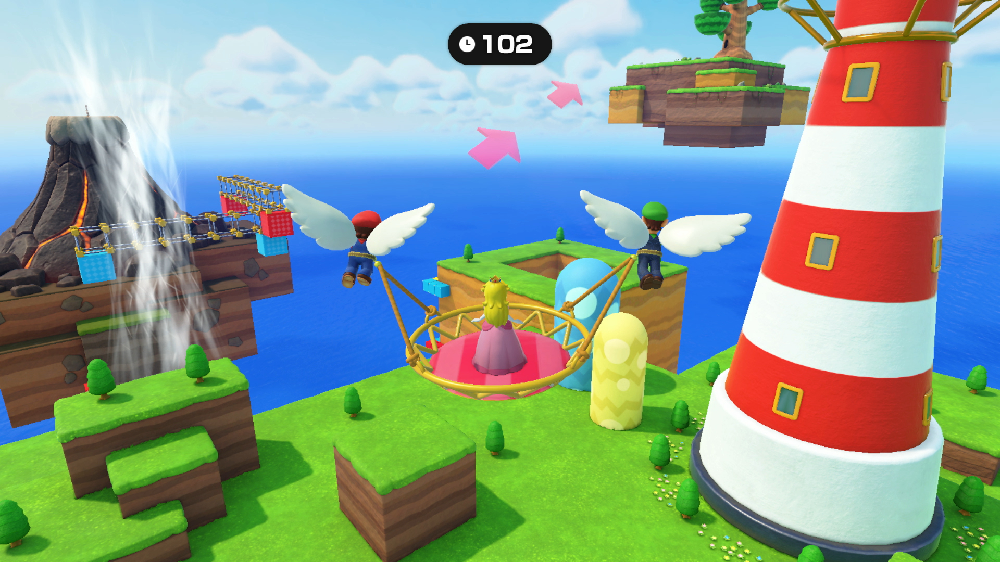
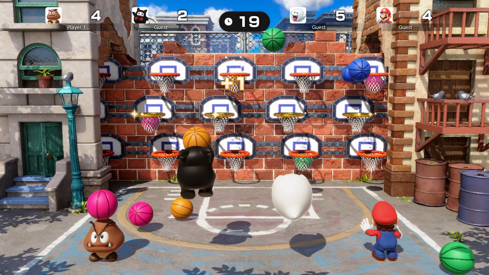
Cada tablero tiene su identidad. Desde el más sencillo, el Castillo arcoíris de Mario, un torreón que corona unas escaleras de nubes por las que ascendemos, en el que hay casillas de evento que cambian el personaje que nos espera en la torre, o bien un Toad que nos vende una estrella o bien el Bowser de pega que aparece en muchos modos, y que aquí nos da una estrella negativa (un cacho de cartón que no sirve para nada); hasta los más complejos, como la Isla Goomba, en la que la marea sube y baja cada ciertos turnos, bloqueando caminos y encerrando a los jugadores menos previsores en islotes hasta que la mar baja. En cada tablero hay un objeto exclusivo que contribuye al humor, la gracieta entendida como el fastidio al resto de participantes (en una de las mesas hay una Mega Floruga que sirve como atajo, pero el gusano se puede mover con una campanita, incluso si hay jugadores encima) e incluso a uno mismo (en otro tablero, Circuito Lanzadados, en el que avanzamos con karts, hay unos dados especiales para avanzar muchas casillas, pero sin frenar incluso si pasamos por delante de una estrella).
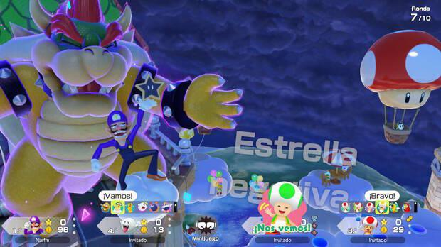
En definitiva, todos los tableros, sus objetos exclusivos y los nuevos objetos generales están diseñados para que en las partidas nunca falten las carcajadas y los lamentos. Hay dos elementos que contribuyen mucho a eso. Por un lado, el Bowser de pega. En todos los tableros hay casillas en las que el villano del Reino Champiñón puede truncar una buena racha, arrebatándonos monedas y estrellas, e incluso sumando las de todos los jugadores y repartiéndolas equitativamente entre todos los jugadores. El otro elemento son los Compas Jamboree. En el tablero aparecen algunos de los personajes icónicos (Mario, Donkey Kong, Waluigi, Estela, etcétera). Cuando un jugador pasa por delante de ellos, comienza un Minijuego con carácter: minijuegos diferentes, más extensos de lo habitual y repletos de referencias (a Mario Kart, a Luigi’s Mansion, a Donkey Konga…) en los que el jugador que lo comienza tiene cierta ventaja, pero será quien gane el que se lleva al compañero durante tres turnos. Cada compa otorga diferentes ventajas (un dado adicional, objetos más baratos en las tiendas, etc.), permiten comprar dos estrellas seguidas al llegar a una y las casillas en las que se cae se activan dos veces; también, claro, las de Bowser.
Conclusiones
Super Mario Party Jamboree sigue siendo un juego de tablero digital y un compendio de minijuegos genial, un videojuego gracioso, caótico y muchas veces injusto al que juegas a la vez que él juega contigo y con tus amigos en partidas donde las carcajadas, las disputas y los enfados se suceden. La cantidad de tableros y su diseño es la mejor que hemos tenido en la consola híbrida, además de las nuevas mecánicas y objetos, y por lo general hay buen nivel entre los más de 110 minijuegos.
Pero esta vez es un juego enorme que quiere adaptarse a todo tipo de situaciones: el multijugador local sigue siendo su centro, pero tiene propuestas interesantes tanto para jugar en línea como para divertirse en solitario, aunque es cierto que algunos de los muchos modos que tiene no pasan de la mera curiosidad. Sin duda, es el mejor Mario Party de Switch. No es oro todo lo que reluce, pero tiene un buen equilibrio entre calidad y cantidad; unifica el espíritu de Super Mario Party y el de Mario Party Superstars, y lo complementa con muchísimo contenido. Si hubiera salido antes en el ciclo de vida de la máquina de Nintendo, habría sido el party game imprescindible de esta generación.

 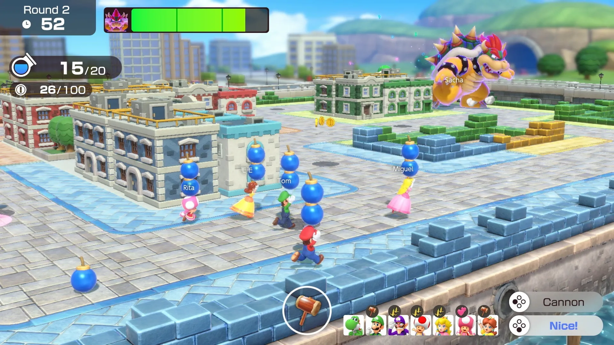
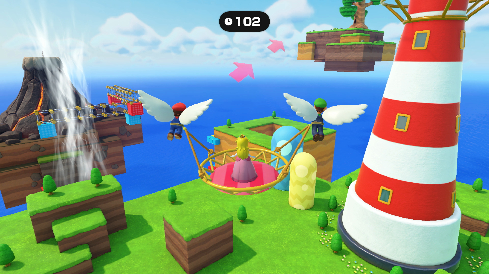
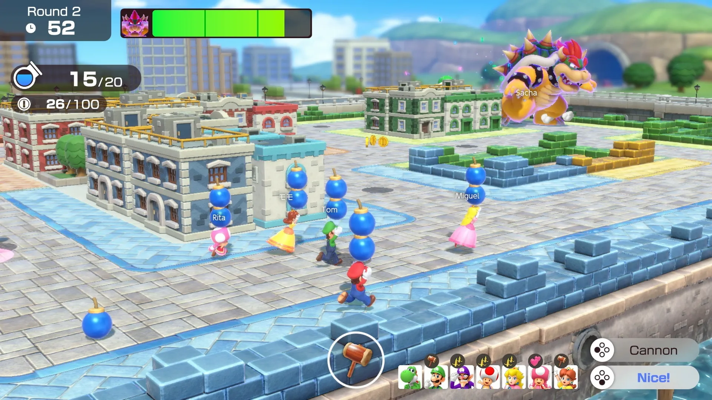
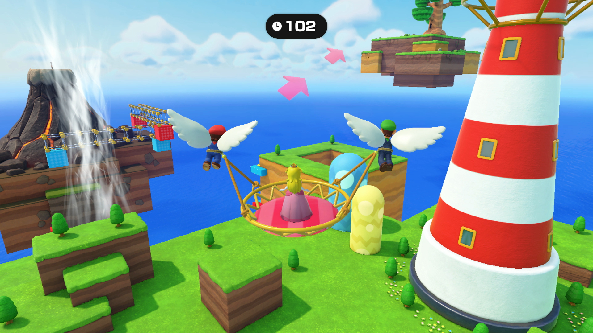
 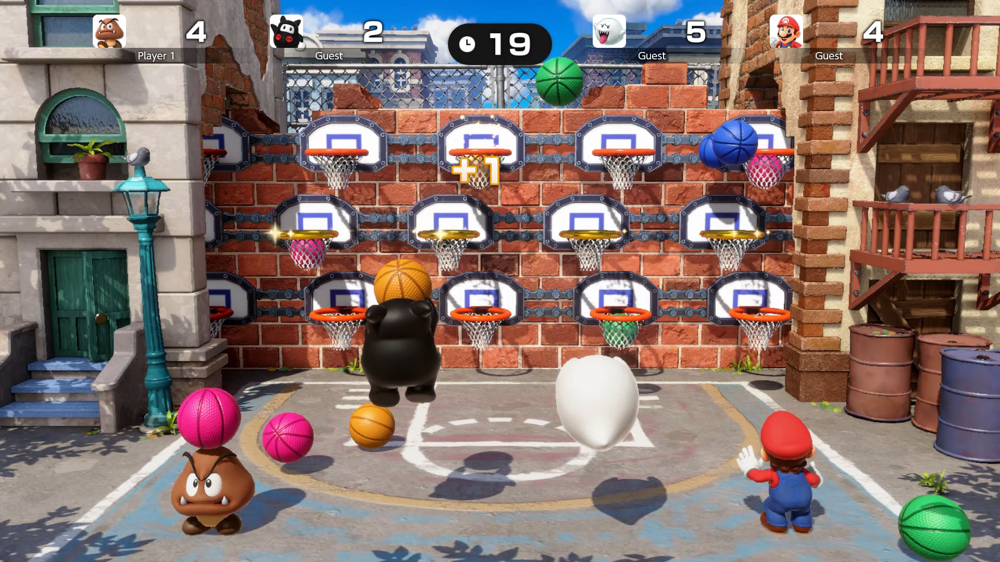
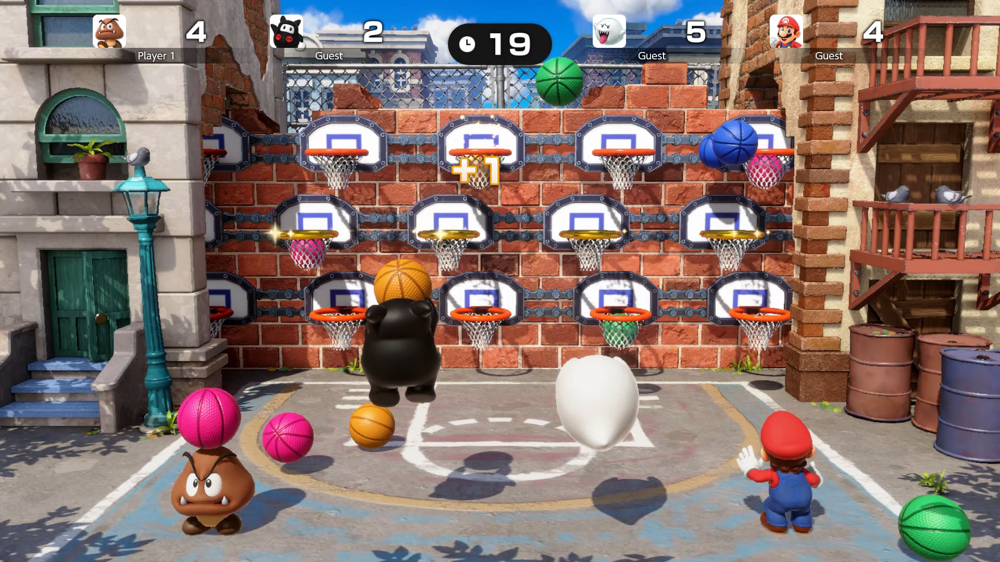